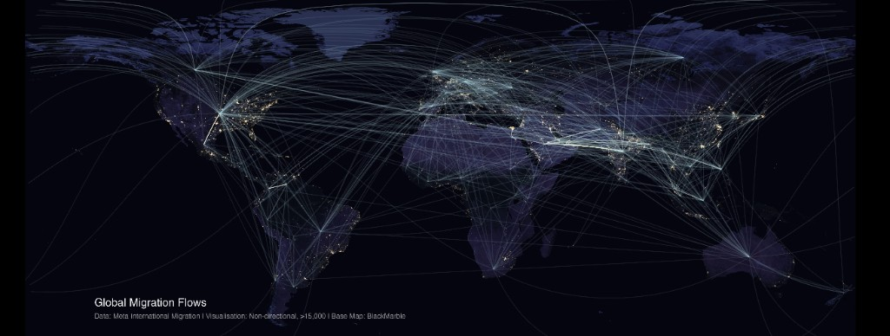

Research Assistant – University of Oxford (Leverhulme Centre for Demographic Science)

Supervisor: Prof. Melinda Mills, Dr. Douglas R. Leasure, Dr. Daniel Valdenegro
- Worked on the Mapineq project (Dashboard, GitHub)
- Working on analysis of results from the National Conversation (take the survey)
- Conducted migration research on policy shocks and cross-border mobility using digital trace data